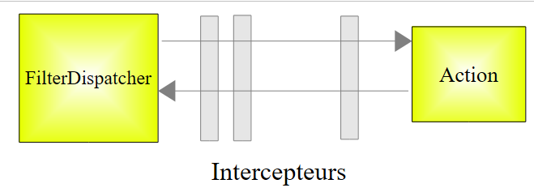
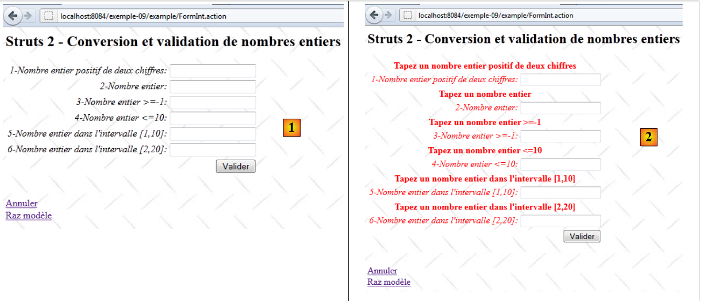
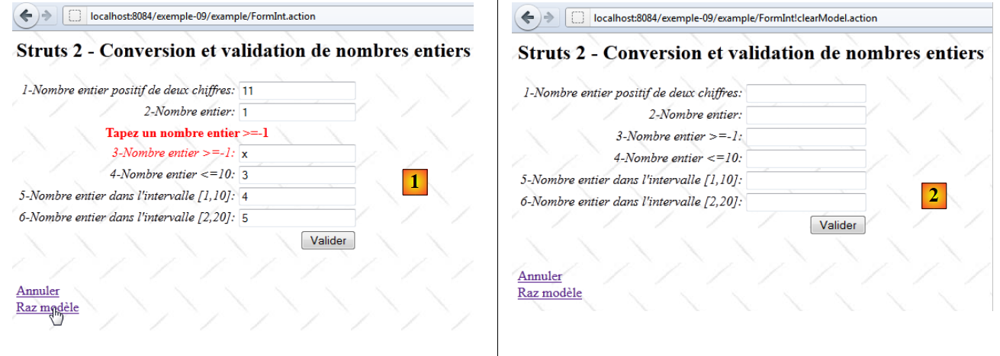
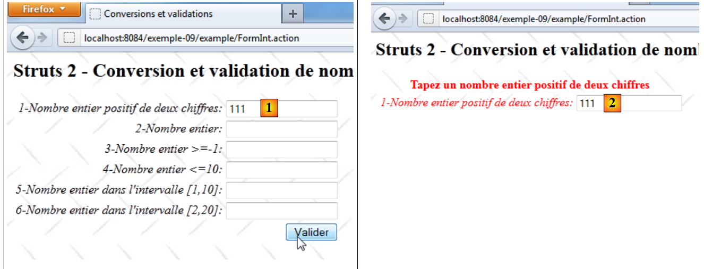

11. Exemplo 09 — Conversão e validação de números inteiros
Abordaremos agora uma série de exemplos sobre a conversão e a validação dos parâmetros de um formulário. O problema é o seguinte. Para processar um URL do tipo [http://machine:port/.../Action], o controlador [FilterDispatcher] instancia a classe que implementa a ação solicitada e executa um de seus métodos; por padrão, o método chamado execute. A chamada a esse método execute passa por uma série de interceptadores:
 |
A lista de interceptadores está definida no arquivo [struts-default.xml], na raiz do arquivo [struts2-core.jar]. A lista de interceptadores definida nesse arquivo é a seguinte:
<interceptor-stack name="defaultStack">
<interceptor-ref name="exception"/>
<interceptor-ref name="alias"/>
<interceptor-ref name="servletConfig"/>
<interceptor-ref name="i18n"/>
<interceptor-ref name="prepare"/>
<interceptor-ref name="chain"/>
<interceptor-ref name="debugging"/>
<interceptor-ref name="scopedModelDriven"/>
<interceptor-ref name="modelDriven"/>
<interceptor-ref name="fileUpload"/>
<interceptor-ref name="checkbox"/>
<interceptor-ref name="multiselect"/>
<interceptor-ref name="staticParams"/>
<interceptor-ref name="actionMappingParams"/>
<interceptor-ref name="params">
<param name="excludeParams">dojo\..*,^struts\..*</param>
</interceptor-ref>
<interceptor-ref name="conversionError"/>
<interceptor-ref name="validation">
<param name="excludeMethods">input,back,cancel,browse</param>
</interceptor-ref>
<interceptor-ref name="workflow">
<param name="excludeMethods">input,back,cancel,browse</param>
</interceptor-ref>
</interceptor-stack>
Entre os interceptadores, há um que se encarrega de injetar na ação os valores valeuri dos parâmetros parami que acompanham a solicitação na forma parami=valeuri. Sabe-se que valeuri será injetado no campo parami da ação por meio do método setParami, caso ele exista. Caso contrário, não ocorre nenhuma injeção e nenhum erro é sinalizado.
A cadeia parami=valeuri é uma cadeia de caracteres. Até o momento, a inserção de valeuri foi realizada nos campos parami do tipo String:
A injeção da sequência valeuri como valor da sequência parami não apresentou nenhum problema. Se parami não for do tipo String, então valeuri deve passar por uma conversão do tipo parami para o tipo Ti. Esse é o problema da conversão. Por exemplo, queremos que uma idade seja um número inteiro e escreveremos na ação:
Além disso, pode-se querer restringir a idade entre 1 e 150. Aqui temos um problema de validação. O parâmetro parami pode ser convertido para o tipo correto sem, no entanto, ser válido. Portanto, há duas etapas a serem realizadas. Se voltarmos ao esquema de processamento de uma solicitação:
 |
Dois interceptadores se encarregarão, respectivamente, da conversão e da validação dos parâmetros. Se uma das etapas falhar, a solicitação não prossegue para a ação (circuito vermelho acima). O formulário a partir do qual os parâmetros incorretos foram enviados é exibido novamente com mensagens de erro.
Os interceptadores responsáveis pela conversão e validação dos parâmetros são os interceptadores conversionError e validation, nas linhas 19 e 20 da lista de interceptadores apresentada anteriormente. Observe-se, nas linhas 20 a 22, que o interceptador validation não é aplicado se o método chamado for um dos métodos input, back, cancel, browse. Utilizaremos essa propriedade mais adiante.
Começaremos estudando a conversão e a validação de números inteiros. Vamos dedicar algum tempo a este primeiro exemplo, pois a validação envolve diversos elementos. Depois de compreendê-los, avançaremos mais rapidamente nos exemplos seguintes.
11.1. O formulário
- em [1], o formulário de preenchimento
- em [2], o resultado ao validar sem inserir valores
11.2. O projeto NetBeans
O projeto NetBeans é o seguinte:
 |
- em [1], as três visualizações do aplicativo
- em [2], os códigos-fonte, os arquivos de mensagens internacionalizadas e os arquivos de configuração do Struts.
11.3. Configuração do Struts
A aplicação é configurada pelos arquivos [struts.xml] e [example.xml].
O arquivo [struts.xml] é o seguinte:
<?xml version="1.0" encoding="UTF-8" ?>
<!DOCTYPE struts PUBLIC
"-//Apache Software Foundation//DTD Struts Configuration 2.0//EN"
"http://struts.apache.org/dtds/struts-2.0.dtd">
<struts>
<constant name="struts.custom.i18n.resources" value="messages" />
<include file="example/example.xml"/>
<package name="default" namespace="/" extends="struts-default">
<default-action-ref name="index" />
<action name="index">
<result type="redirectAction">
<param name="actionName">Accueil</param>
<param name="namespace">/example</param>
</result>
</action>
</package>
</struts>
As linhas 12 a 18 definem a ação [/example/Accueil] como ação padrão quando o usuário não especifica nenhuma.
O arquivo [example.xml] é o seguinte:
<?xml version="1.0" encoding="UTF-8" ?>
<!DOCTYPE struts PUBLIC
"-//Apache Software Foundation//DTD Struts Configuration 2.0//EN"
"http://struts.apache.org/dtds/struts-2.0.dtd">
<struts>
<package name="example" namespace="/example" extends="struts-default">
<action name="Accueil">
<result name="success">/example/Accueil.JSP</result>
</action>
<action name="FormInt" class="example.FormInt">
<result name="input">/example/FormInt.JSP</result>
<result name="cancel" type="redirect">/example/Accueil.JSP</result>
<result name="success">/example/ConfirmationFormInt.JSP</result>
</action>
</package>
</struts>
- linhas 8 a 10: a ação [Accueil] exibe a visualização [Accueil.JSP]
- linha 11: a ação [FormInt] executa, por padrão, o método execute da classe [example.FormInt]. Veremos que outros dois métodos serão executados: os métodos input e cancel. Esses métodos serão, então, especificados nos parâmetros da consulta.
- linha 12: a chave input fará com que a visualização [FormInt.JSP] (linha 5) seja exibida. Essa visualização corresponde ao formulário.
- linha 13: a chave cancel será retornada por um método cancel associado ao link [Annuler]. A visualização exibida será, então, a visualização [Accueil.JSP] após um redirecionamento (type=redirect).
- Linha 14: a chave success é retornada pelo método execute da ação [FormInt]. Se a solicitação chegar ao método execute, é porque ela passou com sucesso por todos os interceptadores, especialmente aqueles que verificam a validade dos parâmetros. O método execute limita-se, então, a retornar a chave success, que fará com que a tela de confirmação [ConfirmationInt.JSP] seja exibida.
11.4. Os arquivos de mensagens
O arquivo [messages.properties] é o seguinte:
Accueil.titre=Accueil
Accueil.message=Struts 2 - Conversions et validations
Accueil.FormInt=Saisie de nombres entiers
Form.titre=Conversions et validations
FormInt.message=Struts 2 - Conversion et validation de nombres entiers
Form.submitText=Valider
Form.cancelText=Annuler
Form.clearModel=Raz mod\u00e8le
Confirmation.titre=Confirmation
Confirmation.message=Confirmation des valeurs saisies
Confirmation.champ=champ
Confirmation.valeur=valeur
Confirmation.lien=Formulaire de test
Além desse arquivo, as visualizações utilizam o seguinte arquivo [FormInt.properties]:
int1.prompt=1-Nombre entier positif de deux chiffres
int1.error=Tapez un nombre entier positif de deux chiffres
int2.prompt=2-Nombre entier
int2.error=Tapez un nombre entier
int3.prompt=3-Nombre entier >=-1
int3.error=Tapez un nombre entier >=-1
int4.prompt=4-Nombre entier <=10
int4.error=Tapez un nombre entier <=10
int5.prompt=5-Nombre entier dans l''intervalle [1,10]
int5.error=Tapez un nombre entier dans l''intervalle [1,10]
int6.prompt=6-Nombre entier dans l''intervalle [2,20]
int6.error=Tapez un nombre entier dans l''intervalle [2,20]
O arquivo [FormInt.properties] só é utilizado quando a ação que gerou a visualização é a ação [FormInt]. Essa é uma forma de segmentar o arquivo de mensagens caso ele seja muito grande. A internacionalização das mensagens da ação é feita no arquivo [Action.properties].
11.5. As visualizações e as ações
Apresentamos agora as visualizações e as ações do aplicativo. De acordo com a configuração do aplicativo:
<?xml version="1.0" encoding="UTF-8" ?>
<!DOCTYPE struts PUBLIC
"-//Apache Software Foundation//DTD Struts Configuration 2.0//EN"
"http://struts.apache.org/dtds/struts-2.0.dtd">
<struts>
<package name="example" namespace="/example" extends="struts-default">
<action name="Accueil">
<result name="success">/example/Accueil.JSP</result>
</action>
<action name="FormInt" class="example.FormInt">
<result name="input">/example/FormInt.JSP</result>
<result name="cancel" type="redirect">/example/Accueil.JSP</result>
<result name="success">/example/ConfirmationFormInt.JSP</result>
</action>
</package>
</struts>
vemos que há três visualizações [Accueil.JSP, FormInt.JSP, ConfirmationFormInt.JSP] e duas ações [Accueil, FormInt].
11.5.1. Accueil.JSP
A visualização [Accueil.JSP] é a seguinte:
 |
Seu código é o seguinte:
<%@ page contentType="text/html; charset=UTF-8" pageEncoding="UTF-8"%>
<%@ taglib prefix="s" uri="/struts-tags" %>
<html>
<head>
<title><s:text name="Accueil.titre"/></title>
<s:head/>
</head>
<body background="<s:url value="/ressources/standard.jpg"/>">
<h2><s:text name="Accueil.message"/></h2>
<ul>
<li>
<s:url id="URL" action="FormInt!input"/>
<s:a href="%{URL}"><s:text name="Accueil.FormInt"/></s:a>
</li>
</ul>
</body>
</html>
O link da linha 14 gera o seguinte código HTML:
<a href="<a href="view-source:http://localhost:8084/exemple-09/example/FormInt.action">/exemple-09/example/FormInt!input.action</a>">Saisie de nombres entiers</a>
Trata-se, portanto, de um link para a ação [FormInt], configurada da seguinte forma em [example.xml]:
<action name="FormInt" class="example.FormInt">
<result name="input">/example/FormInt.JSP</result>
<result name="cancel" type="redirect">/example/Accueil.JSP</result>
<result name="success">/example/ConfirmationFormInt.JSP</result>
</action>
Um clique no link irá, portanto, instanciar a classe [example.FormInt] e executar o método input dessa classe. Como ela não existe, será executado o método input da classe pai ActionSupport. Esse método não faz nada além de retornar a chave input. Portanto, será exibida a visualização [/example/FormInt.JSP].
Além disso, o método input é um dos métodos ignorados pelo interceptador de validação:
<interceptor-ref name="validation">
<param name="excludeMethods">input,back,cancel,browse</param>
</interceptor-ref>
Portanto, não haverá validação de parâmetros. Isso é importante porque, neste caso, não há parâmetros, e veremos posteriormente que as regras de validação exigirão a existência de seis parâmetros.
11.5.2. A ação [FormInt]
A ação [FormInt] está associada à seguinte classe [FormInt]:
package example;
import com.opensymphony.xwork2.ActionSupport;
import com.opensymphony.xwork2.ModelDriven;
import java.util.Map;
import org.apache.struts2.interceptor.SessionAware;
import org.apache.struts2.interceptor.validation.SkipValidation;
public class FormInt extends ActionSupport implements ModelDriven, SessionAware {
// construtor sem parâmetro
public FormInt() {
}
// modelo da ação
public Object getModel() {
if (session.get("model") == null) {
session.put("model", new FormIntModel());
}
return session.get("model");
}
public String cancel() {
// limpa-se o modelo
((FormIntModel) getModel()).clearModel();
// resultado
return "cancel";
}
@SkipValidation
public String clearModel() {
// zerando o modelo
((FormIntModel) getModel()).clearModel();
// resultado
return INPUT;
}
// SessionAware
private Map<String, Object> session;
public void setSession(Map<String, Object> session) {
this.session = session;
}
// validação
@Override
public void validate() {
// entrada int6 válida?
if (getFieldErrors().get("int6") == null) {
int int6 = Integer.parseInt(((FormIntModel) getModel()).getInt6());
if (int6 < 2 || int6 > 20) {
addFieldError("int6", getText("int6.error"));
}
}
}
}
Iremos comentar esse código à medida que for necessário. Por enquanto:
- na linha 9, a classe [FormInt] implementa duas interfaces:
- ModelDriven, que possui apenas um método, getModel da linha 16
- SessionAware, que possui apenas um método, setSession, na linha 41
- linhas 16-21: implementação da interface ModelDriven. Vale lembrar que essa interface permite transferir o modelo de uma visualização para uma classe externa, neste caso, a seguinte classe [FormIntModel]:
package example;
public class FormIntModel {
// construtor sem parâmetro
public FormIntModel() {
}
// campos do formulário
private String int1;
private Integer int2;
private Integer int3;
private Integer int4;
private Integer int5;
private String int6;
// modelo em branco
public void clearModel(){
int1=null;
int2=null;
int3=null;
int4=null;
int5=null;
int6=null;
}
// getters e setters
...
}
O modelo [FormIntModel] possui seis campos correspondentes aos seis campos de entrada da visualização [FormInt.JSP]. São esses seis campos que receberão os valores postados. Quatro deles são do tipo Integer. Portanto, para esses campos, surgirá o problema da conversão de String para Integer. O método clearModel permite reinicializar o modelo.
Voltemos ao método getModel da ação [FormInt]:
// modelo da ação
public Object getModel() {
if (session.get("model") == null) {
session.put("model", new FormIntModel());
}
return session.get("model");
}
- linhas 3-5: o modelo é procurado na sessão. Se não estiver lá, uma instância do modelo é criada e colocada na sessão.
- linha 6: embora uma instância da ação seja criada a cada nova solicitação feita à ação, seu modelo permanecerá na sessão.
Vemos que a classe não define um método input, mas a classe pai possui um que retorna a chave input. A execução desse método leva à exibição da vista [FormInt.JSP], que apresentamos a seguir.
11.5.3. A visualização [FormInt.JSP]
A visualização [FormInt.JSP] é a seguinte:
 |
- em [1], o formulário em branco
- em [2], o formulário após a validação de parâmetros incorretos.
Seu código é o seguinte:
<%@ page contentType="text/html; charset=UTF-8" pageEncoding="UTF-8"%>
<%@ taglib prefix="s" uri="/struts-tags" %>
<html>
<head>
<title><s:text name="Form.titre"/></title>
<s:head/>
</head>
<body background="<s:url value="/ressources/standard.jpg"/>">
<h2><s:text name="FormInt.message"/></h2>
<s:form name="formulaire" action="FormInt">
<s:textfield name="int1" key="int1.prompt"/>
<s:textfield name="int2" key="int2.prompt"/>
<s:textfield name="int3" key="int3.prompt"/>
<s:textfield name="int4" key="int4.prompt"/>
<s:textfield name="int5" key="int5.prompt"/>
<s:textfield name="int6" key="int6.prompt"/>
<s:submit key="Form.submitText" method="execute"/>
</s:form>
<br/>
<s:url id="URL" action="FormInt" method="cancel"/>
<s:a href="%{URL}"><s:text name="Form.cancelText"/></s:a>
<br/>
<s:url id="URL" action="FormInt" method="clearModel"/>
<s:a href="%{URL}"><s:text name="Form.clearModel"/></s:a>
</body>
</html>
- linhas 12-17: os seis campos de entrada correspondentes aos seis campos do modelo [FormIntModel] da ação [FormInt]. Ao exibir a visualização, são os atributos value dos campos de entrada que são utilizados para o valor exibido por esses campos. Na ausência do atributo value, é utilizado o atributo name.
- linha 12: o campo de entrada está associado (name) ao campo int1 da ação ou de seu modelo, caso a ação implemente a interface ModelDriven. É o que ocorre neste caso. O mesmo se aplica a todos os outros campos.
- linha 18: o botão [Valider] envia os dados inseridos para a ação [FormInt] definida na linha 11. Será executado o método execute dessa ação.
- linhas 21-22: o link [Annuler] executa o método [FormInt.cancel].
- linhas 24-25: o link [Raz modèle] executa o método [FormInt.clearModel].
11.5.4. A visualização [ConfirmationFormInt.JSP]
 |
Ela é exibida quando todas as entradas do formulário [FormInt.JSP] são válidas.
- no [1], os valores válidos são lançados
- na [2], a página de confirmação
O código da visualização [ConfirmationInt.JSP] é o seguinte:
<%@ page contentType="text/html; charset=UTF-8" pageEncoding="UTF-8"%>
<%@ taglib prefix="s" uri="/struts-tags" %>
<html>
<head>
<title><s:text name="Confirmation.titre"/></title>
<s:head/>
</head>
<body background="<s:url value="/ressources/standard.jpg"/>">
<h2><s:text name="Confirmation.message"/></h2>
<table border="1">
<tr>
<th><s:text name="Confirmation.champ"/></th>
<th><s:text name="Confirmation.valeur"/></th>
</tr>
<tr>
<td><s:text name="int1.prompt"/></td>
<td><s:property value="int1"/></td>
</tr>
<tr>
<td><s:text name="int2.prompt"/></td>
<td><s:property value="int2"/></td>
</tr>
<tr>
<td><s:text name="int3.prompt"/></td>
<td><s:property value="int3"/></td>
</tr>
<tr>
<td><s:text name="int4.prompt"/></td>
<td><s:property value="int4"/></td>
</tr>
<tr>
<td><s:text name="int5.prompt"/></td>
<td><s:property value="int5"/></td>
</tr>
<tr>
<td><s:text name="int6.prompt"/></td>
<td><s:property value="int6"/></td>
</tr>
</table>
<br/>
<s:url id="URL" action="FormInt" method="input"/>
<s:a href="%{URL}"><s:text name="Confirmation.lien"/></s:a>
</body>
</html>
Para entender esse código, é preciso lembrar que a visualização é exibida após a instanciação da classe [FormInt]. Os campos dessa classe e de seu modelo [FormIntModel] estão, portanto, acessíveis à visualização.
- linhas 16-38: os valores dos seis campos são exibidos
- linhas 42-43: um link para a ação [FormInt]. O código gerado para esse link é o seguinte:
<a href="/exemple-09/example/FormInt!input.action">Formulaire de test</a>
O código específico URL do link indica que o método input da ação [FormInt] deve processar a solicitação. Vale lembrar a configuração da ação [FormInt] em [example.xml]:
<action name="FormInt" class="example.FormInt">
<result name="input">/example/FormInt.JSP</result>
<result name="cancel" type="redirect">/example/Accueil.JSP</result>
<result name="success">/example/ConfirmationFormInt.JSP</result>
</action>
O método input da classe [FormInt] será o mesmo da sua classe pai, ActionSupport. A execução do método input da classe [FormInt] ocorre após a execução dos interceptadores
 |
Sabe-se que a chamada ao método input é ignorada pelo interceptador de validação. Portanto, não haverá validação.
A visualização [FormInt.JSP] é exibida:
 |
Em [2], os campos de entrada recuperam seus valores inseridos. Isso pode parecer normal, mas não é. Como a ação [FormInt] foi chamada, a classe associada [FormInt] foi instanciada. Como essa classe implementa a interface ModelDriven, seu método getModel foi chamado:
// modelo da ação
public Object getModel() {
if (session.get("model") == null) {
session.put("model", new FormIntModel());
}
return session.get("model");
}
Vemos que o modelo da ação é recuperado da sessão. Na etapa anterior, esse modelo havia sido atualizado pelos valores enviados. Portanto, esses valores são recuperados. Se não tivéssemos colocado o modelo na sessão, teríamos seis campos vazios na visualização [FormInt.JSP].
11.5.5. A ação [FormInt!clearModel]
A ação [Formint!clearModel] é acionada ao clicar no link [Raz modèle]:
 |
- em [1], o formulário após uma entrada incorreta
- em [2], o formulário após um clique no link [Raz modèle].
O método [FormInt.clearModel] é o seguinte:
@SkipValidation
public String clearModel() {
// reinicialização do modelo
((FormIntModel) getModel()).clearModel();
// resultado
return INPUT;
}
- linha 1: não há validação a ser feita. Utiliza-se a notação @SkipValidation para indicar isso. O interceptador de validação não realizará, portanto, as validações.
- linha 4: o método [FormIntModel].clearModel é executado. Já o encontramos anteriormente. Ele reinicializa os seis campos do modelo para null.
- linha 7: o método retorna a chave input.
Se voltarmos à configuração da ação [FormInt]:
<action name="FormInt" class="example.FormInt">
<result name="input">/example/FormInt.JSP</result>
<result name="cancel" type="redirect">/example/Accueil.JSP</result>
<result name="success">/example/ConfirmationFormInt.JSP</result>
</action>
vemos que a chave input fará com que a visualização [FormInt.JSP] seja exibida. Esta exibe os seis campos do modelo. Como esses campos estão em null, a visualização exibe seis campos vazios [2].
11.5.6. A ação [FormInt!cancel]
A ação [Formint!cancel] é acionada ao clicar no link [Annuler]:
 |
- em [1], o formulário após uma entrada incorreta
- em [2], a página inicial após clicar no link [Annuler].
O método [FormInt.cancel] é o seguinte:
public String cancel() {
// limpamos o modelo
((FormIntModel) getModel()).clearModel();
// resultado
return "cancel";
}
- linha 1: observe-se que o método não é precedido pela anotação SkipValidation. No entanto, não se deseja realizar as validações. O método cancel faz parte dos quatro métodos input, back, cancel e browse, que são ignorados pelo interceptador de validação; portanto, a anotação SkipValidation também não é necessária.
- linha 3: ela esvazia o modelo
- linha 5: ela retorna a chave cancel
Se voltarmos à configuração da ação [FormInt]:
<action name="FormInt" class="example.FormInt">
<result name="input">/example/FormInt.JSP</result>
<result name="cancel" type="redirect">/example/Accueil.JSP</result>
<result name="success">/example/ConfirmationFormInt.JSP</result>
</action>
vemos que a chave cancel fará com que a visualização [Accueil.JSP] seja exibida após um redirecionamento do cliente. É isso que mostra a visualização [2].
11.6. O processo de validação
Abordaremos agora a validação dos seis campos de entrada associados aos seis campos a seguir do modelo:
// campos do formulário
private String int1;
private Integer int2;
private Integer int3;
private Integer int4;
private Integer int5;
private String int6;
Essa validação ocorre sempre que a classe [FormInt] é instanciada e o método executado não é ignorado pelo interceptador de validação. Ela é controlada por:
- o arquivo [FormInt-validation.xml], caso exista na mesma pasta que a classe [FormInt]
- o método [FormInt.validate], caso exista.
 |
- em [1]: o arquivo [xwork-validator-1.0.2.dtd] necessário para o processo de validação
- em [2]: o arquivo [FormInt-validation.xml] na mesma pasta que a classe [FormInt]
O arquivo [FormInt-validation.xml] é o seguinte:
<!--
<!DOCTYPE validators PUBLIC "-//OpenSymphony Group//XWork Validator 1.0.2//
EN" "http://www.opensymphony.com/xwork/xwork-validator-1.0.2.dtd">
-->
<!DOCTYPE validators PUBLIC "-//OpenSymphony Group//XWork Validator 1.0.2//
EN" "http://localhost:8084/exemplo-09/example/xwork-validator-1.0.2.dtd">
<validators>
<field name="int1" >
<field-validator type="requiredstring" short-circuit="true">
<message key="int1.error"/>
</field-validator>
<field-validator type="regex" short-circuit="true">
<param name="expression">^\d{2}$</param>
<param name="trim">true</param>
<message key="int1.error"/>
</field-validator>
</field>
<field name="int2" >
...
</field>
...
</validators>
- em [3], o URL da DTD (Definição de Tipo de Documento) do arquivo de validação. Este deve estar acessível; caso contrário, o arquivo de validação não será utilizado.
- em [7], o URL do DTD utilizado pelo aplicativo. Colocamos o arquivo DTD na pasta [example] do projeto exemple-09 [1] para que ele esteja disponível mesmo sem acesso à Internet.
- linhas 11-20: definem as condições de validação do parâmetro int1 associado ao campo int1 do modelo.
A tag denominada int1 no formulário é a seguinte:
<s:textfield name="int1" key="int1.prompt" />
O campo int1 do modelo é declarado da seguinte forma:
private String int1;
- linhas 12-14: verificam se o parâmetro int1 existe (não null) e se seu comprimento é diferente de zero. Caso contrário, uma mensagem de erro é associada ao campo de entrada. Ele está definido em [FormInt.properties] da seguinte forma:
int1.error=Tapez un nombre entier positif de deux chiffres
Se houver um erro, o processo de validação do parâmetro int1 é interrompido (short-circuit=true).
- linhas 15-19: a validade do parâmetro int1 é verificada por uma expressão regular.
- linha 16: a expressão regular, neste caso, dois dígitos sem nada antes nem depois.
- linha 17: o parâmetro int1, antes de ser comparado à expressão regular, terá os espaços iniciais e finais removidos.
- linha 18: a eventual mensagem de erro. É a mesma do validador anterior.
Vamos ver como fica:
 |
- em [1], uma entrada incorreta para o campo int1
- em [2], a página exibida:
- a mensagem de erro da chave int1.error está presente. Ela está em vermelho.
- o nome do campo com erro também está em vermelho.
- A entrada incorreta é exibida novamente. É preciso estar ciente disso, pois esse não é necessariamente o comportamento padrão.
Vimos que a validação do formulário provoca a execução do método [FormInt].execute se a solicitação conseguir passar por todos os interceptadores, especialmente o de validação:
 |
- se a solicitação chegar ao método execute da ação, este retorna a chave success ao controlador, como vimos...
- se o interceptador de validação interromper a solicitação porque os parâmetros testados não são válidos, então a chave input é devolvida ao controlador.
Como a ação [FormInt] está configurada da seguinte forma:
<action name="FormInt" class="example.FormInt">
<result name="input">/example/FormInt.JSP</result>
<result name="cancel" type="redirect">/example/Accueil.JSP</result>
<result name="success">/example/ConfirmationFormInt.JSP</result>
</action>
quando ocorre um erro de validação, é exibida a visualização [FormInt.JSP], ou seja, o formulário. As tags Struts são criadas de forma a exibir as eventuais mensagens de erro associadas a elas. Assim, teremos a visualização [FormInt.JSP] com as mensagens de erro associadas aos diferentes campos. É isso que mostra a visualização [2].
Vamos agora examinar a validação do campo int2, declarado da seguinte forma no modelo:
private Integer int2;
A validação do campo int2 em [FormInt-validation.xml] é a seguinte:
<field name="int2" >
<field-validator type="required" short-circuit="true">
<message key="int2.error"/>
</field-validator>
<field-validator type="conversion" short-circuit="true">
<message key="int2.error"/>
</field-validator>
</field>
- linhas 2-4: verificam se o parâmetro int2 existe.
- linhas 5-7: verificam se a conversão de String para Integer é possível
- linhas 3 e 6: a mensagem de erro da chave int2.error é a seguinte:
int2.error=Tapez un nombre entier
A validação dos campos Integer e int3 do modelo em [FormInt-validation.xml] é a seguinte:
<field name="int3" >
<field-validator type="required" short-circuit="true">
<message key="int3.error"/>
</field-validator>
<field-validator type="conversion" short-circuit="true">
<message key="int2.error"/>
</field-validator>
<field-validator type="int" short-circuit="true">
<param name="min">-1</param>
<message key="int3.error"/>
</field-validator>
</field>
- linhas 8-11: verificam se o campo int3 é do tipo inteiro >=-1
- linhas 3 e 7: a mensagem de erro da chave int3.error é a seguinte:
int3.error=Tapez un nombre entier >=-1
A validação dos campos Integer e int4 do modelo em [FormInt-validation.xml] é a seguinte:
<field name="int4" >
<field-validator type="required" short-circuit="true">
<message key="int4.error"/>
</field-validator>
<field-validator type="conversion" short-circuit="true">
<message key="int2.error"/>
</field-validator>
<field-validator type="int" short-circuit="true">
<param name="max">10</param>
<message key="int4.error"/>
</field-validator>
</field>
- linhas 8-11: verificam se o valor é do tipo inteiro <=10
- linhas 3 e 7: a mensagem de erro da chave int4.error é a seguinte:
int4.error=Tapez un nombre entier <=10
A validação do campo Integer int5 do modelo em [FormInt-validation.xml] é a seguinte:
<field name="int5" >
<field-validator type="required" short-circuit="true">
<message key="int5.error"/>
</field-validator>
<field-validator type="conversion" short-circuit="true">
<message key="int2.error"/>
</field-validator>
<field-validator type="int" short-circuit="true">
<param name="min">1</param>
<param name="max">10</param>
<message key="int5.error"/>
</field-validator>
</field>
- linhas 5-9: verificam se o valor é do tipo inteiro no intervalo [1, 10].
- linhas 3 e 8: a mensagem de erro da chave int5.error é a seguinte:
int5.error=Tapez un nombre entier dans l''intervalle [1,10]
A validação do campo String int6 do modelo em [FormInt-validation.xml] é a seguinte:
<field name="int6" >
<field-validator type="requiredstring" short-circuit="true">
<message key="int6.error"/>
</field-validator>
<field-validator type="regex" short-circuit="true">
<param name="expression">^\d{1,2}$</param>
<param name="trim">true</param>
<message key="int6.error"/>
</field-validator>
</field>
- linhas 5-9: verificam se int6 é uma sequência de 2 dígitos.
- linha 3, 8: a mensagem de erro da chave int6.error é a seguinte:
int6.error=Tapez un nombre entier dans l''intervalle [2,20]
A validação anterior não verifica se o parâmetro int6 é um número inteiro no intervalo [2,20]. Essa verificação é feita no método [FormInt].validate, que é executado após o arquivo [FormInt-validation.xml] ter sido processado. Esse método é o seguinte:
// validação
@Override
public void validate() {
// a entrada int6 é válida?
if (getFieldErrors().get("int6") == null) {
int int6 = Integer.parseInt(((FormIntModel) getModel()).getInt6());
if (int6 < 2 || int6 > 20) {
addFieldError("int6", getText("int6.error"));
}
}
}
- linha 5: verifica-se se há erros associados ao campo int6. Se houver, o processo é interrompido.
- linha 6: se não houver erros, recupera-se o campo String int6 do modelo e ele é convertido em inteiro.
- linha 7: verifica-se se o inteiro recuperado está dentro do intervalo [2,20].
- linha 8: se não estiver, uma mensagem de erro é associada ao campo int6. Essa mensagem de erro é buscada no arquivo de mensagens com a chave int6.error.
Se, ao final desse processo de validação, houver erros, a chamada para o método [FormInt].execute é interrompida e a chave input é devolvida ao controlador Struts.
 |
11.7. Últimos detalhes
Vimos várias maneiras de inserir números inteiros. Nem todas são equivalentes. Consideremos, por exemplo, os campos de entrada int5 e int6:
Na visualização [FormInt.JSP], eles são declarados da seguinte forma:
<s:textfield name="int5" key="int5.prompt"/>
<s:textfield name="int6" key="int6.prompt"/>
Seu modelo está declarado em [FormIntModel.java]:
private Integer int5;
private String int6;
O campo int5 é do tipo Integer, enquanto o campo int6 é do tipo String. Suas regras de validação são diferentes:
<field name="int5" >
<field-validator type="required" short-circuit="true">
<message key="int5.error"/>
</field-validator>
<field-validator type="conversion" short-circuit="true">
<message key="int2.error"/>
</field-validator>
<field-validator type="int" short-circuit="true">
<param name="min">1</param>
<param name="max">10</param>
<message key="int5.error"/>
</field-validator>
</field>
<field name="int6" >
<field-validator type="requiredstring" short-circuit="true">
<message key="int6.error"/>
</field-validator>
<field-validator type="regex" short-circuit="true">
<param name="expression">^\d{1,2}$</param>
<param name="trim">true</param>
<message key="int6.error"/>
</field-validator>
</field>
A validação do campo int6 é complementada pelo método validate da ação [FormInt]:
public void validate() {
// entrada int6 válida?
if (getFieldErrors().get("int6") == null) {
int int6 = Integer.parseInt(((FormIntModel) getModel()).getInt6());
if (int6 < 2 || int6 > 20) {
addFieldError("int6", getText("int6.error"));
}
}
Embora expressas de maneira diferente, ambas as regras de validação têm como objetivo verificar se o campo inserido é um número inteiro dentro de um intervalo. O comportamento dos campos int5 e int6, no entanto, é diferente na execução, conforme mostram as capturas de tela a seguir:
 |
- em [1], a mesma entrada incorreta para os dois campos
- no [2], a página de erros exibida. Os dois campos apresentam mensagens de erro diferentes.
- em [3], aparece para o campo int5 uma mensagem indesejada, pois está em inglês. Ela decorre da conversão malsucedida de String para Integer. Além disso, há uma exceção nos logs do Apache:
Curiosamente, o Struts procurou um método FormIntModel.setInt5(String value) que não encontrou.
A chave da mensagem indesejada é xwork.default.invalid.fieldvalue. Para traduzi-la para o francês, basta associar um texto em francês a essa chave. Assim, adicionamos ao arquivo [messages.properties] a seguinte linha:
...
xwork.default.invalid.fieldvalue=Valeur invalide pour le champ "{0}".
11.8. Conclusion
Conclui-se aqui o estudo desta primeira aplicação dedicada à validação de parâmetros. Foi complexo explicá-la. Passaremos agora a estudar aplicações semelhantes. Portanto, comentaremos apenas o que muda.